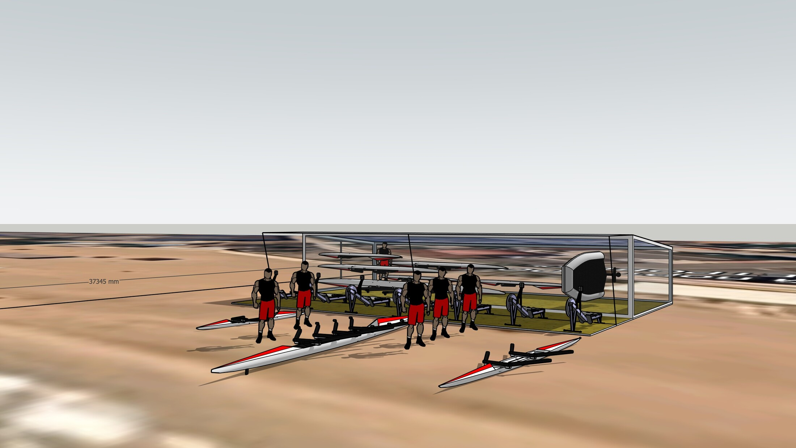
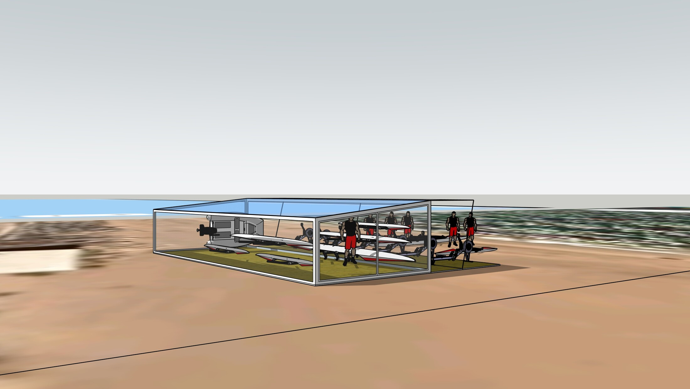
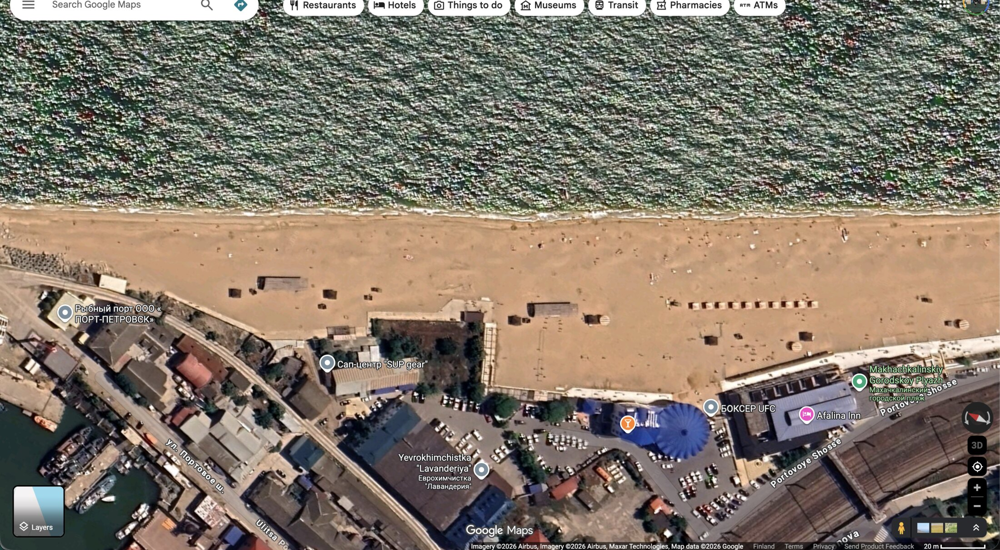
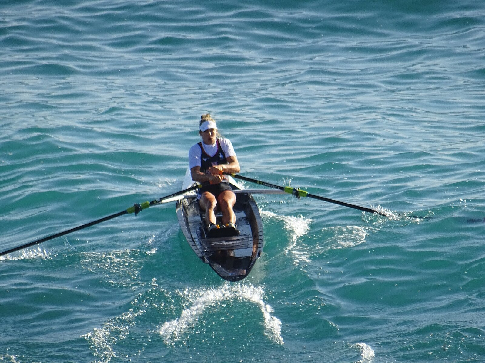
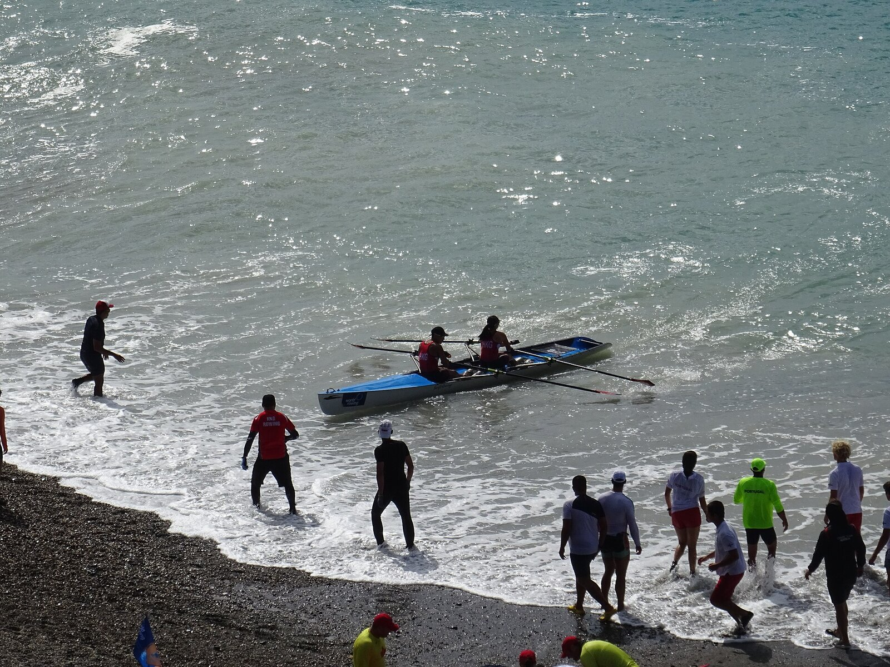
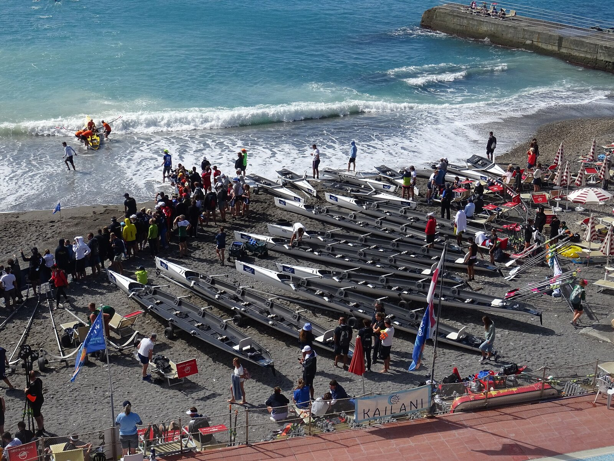
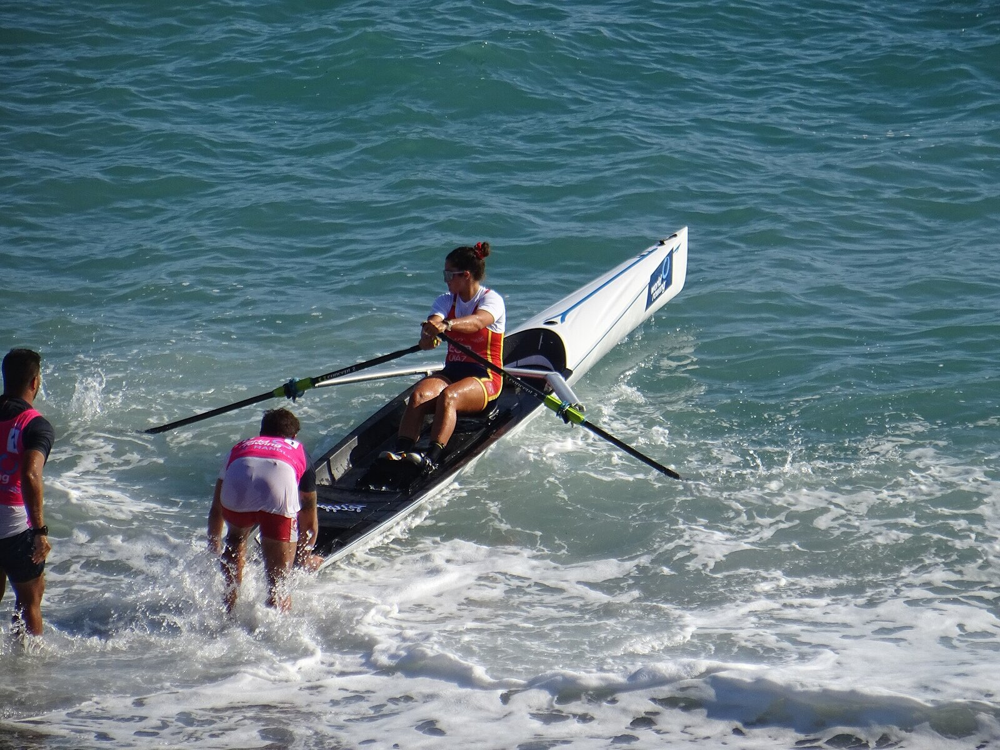

Суть предложения
Разместить на городском пляже Махачкалы модульный эллинг 16 × 8 м для хранения и обслуживания лодок прибрежной гребли.
На его базе создаётся центр развития морской гребли — нового для Дагестана направления водного спорта, которое использует главное преимущество города: открытую акваторию Каспийского моря. Объект лёгкий, сборно-разборный и не требует капитального строительства.
Почему это нужно городу
Уникальное преимущество Каспия
Открытая морская акватория — естественный ресурс Махачкалы для прибрежной гребли, которого нет у большинства гребных центров России. Город получает спорт, «заточенный» именно под его географию.
Спорт и молодёжь
Новое направление, детские и взрослые секции, набор и подготовка спортсменов — в логике нацпроекта «Спорт — норма жизни».
Туризм и набережная
Точка притяжения на берегу: регаты, событийный туризм, оживление городского пляжа и рост турпотока.
Без капитального строительства
Лёгкая сборно-разборная конструкция на свайном основании: быстрый монтаж, обратимость решения и минимум согласований. Низкий риск для города при высокой отдаче.
Концепция объекта


Визуализация концепции выполнена в SketchUp. Архитектурное и техническое решение уточняется на стадии рабочего проектирования.
Местоположение

Каким это может стать
Прибрежная гребля (Coastal Rowing / Beach Sprint) — одна из самых динамично развивающихся дисциплин мировой гребли, со своим ежегодным мировым финалом. Зрелищный, доступный спорт, созданный для открытого моря.




Фото: Финал Кубка мира по прибрежной гребле, 2024 · © Postcrosser / Wikimedia Commons (CC BY-SA 4.0). Иллюстрация атмосферы дисциплины.
Что требуется от Администрации
Земельный участок / согласование
Выделение участка на городском пляже или согласование размещения некапитального объекта.
Инженерные сети
Содействие в подключении к электро- и водоснабжению площадки.
Статус и поддержка
Включение инициативы в программу развития набережной и спорта города.
Запуск и содержание центра
- Закупку и обслуживание флота лодок
- Эксплуатацию и содержание эллинга
- Организацию секций, проката и обучения
- Проведение тренировок и городских регат